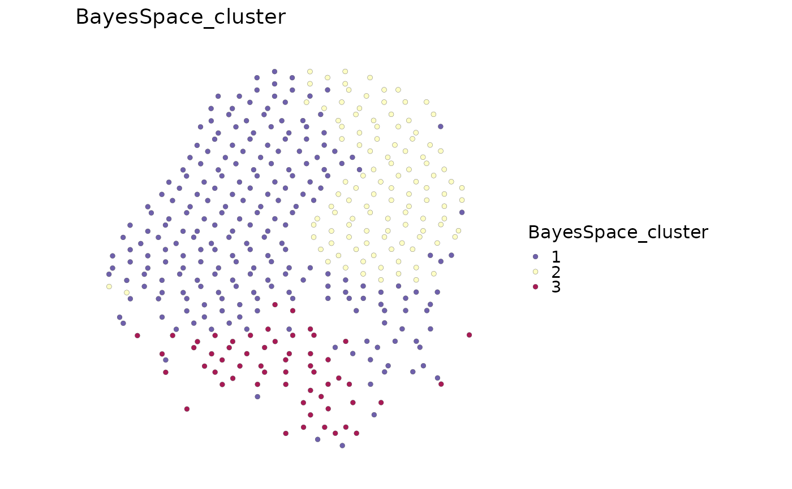

Run BayesSpace spatial clustering
Usage
RunBayesSpace(
srt,
q,
assay = NULL,
platform = c("Visium", "VisiumHD", "ST"),
image = NULL,
use_reduction = NULL,
dims = 1:15,
preprocess = TRUE,
n.PCs = 15,
n.HVGs = 2000,
skip.PCA = !is.null(use_reduction),
spatial_preprocess_params = list(),
spatial_cluster_params = list(),
cluster_colname = "BayesSpace_cluster",
init_colname = "BayesSpace_init",
store_sce = TRUE,
verbose = TRUE
)Arguments
- srt
A Seurat object.
- q
Number of BayesSpace clusters.
- assay
Which assay to use. If
NULL, the default assay of the Seurat object will be used. When the object also containsChromatinAssay, the default assay and additionalChromatinAssaywill be preprocessed sequentially.- platform
Spatial sequencing platform.
- image
Name of the Seurat spatial image used to recover spot coordinates when they are not already present in metadata. For regular Visium data with only pixel
x/ycoordinates, BayesSpace array coordinates are inferred from the spatial grid.- use_reduction
Optional Seurat reduction to pass to BayesSpace as PCA.
- dims
Dimensions from
use_reductionto use.- preprocess
Whether to run
BayesSpace::spatialPreprocess().- n.PCs, n.HVGs
Parameters passed to
spatialPreprocess().- skip.PCA
Whether to skip PCA inside
spatialPreprocess().- spatial_preprocess_params
Additional parameters passed to
BayesSpace::spatialPreprocess().- spatial_cluster_params
Additional parameters passed to
BayesSpace::spatialCluster().- cluster_colname
Metadata column used for BayesSpace clusters.
- init_colname
Metadata column used for BayesSpace initial clusters.
- store_sce
Whether to store the BayesSpace
SingleCellExperimentinsrt@tools.- verbose
Whether to print the message. Default is
TRUE.
Value
A Seurat object with BayesSpace clusters in metadata and raw
results in srt@tools[["BayesSpace"]].
Examples
data(visium_human_pancreas_sub)
spatial <- RunBayesSpace(
visium_human_pancreas_sub,
q = 3,
n.PCs = 5,
n.HVGs = 200,
store_sce = FALSE,
spatial_cluster_params = list(
nrep = 200,
burn.in = 50,
thin = 10,
save.chain = FALSE
)
)
#> ℹ [2026-05-23 08:18:12] Convert <Seurat> to <SingleCellExperiment> for BayesSpace
#> Warning: Layer ‘data’ is empty
#> Warning: Layer ‘scale.data’ is empty
#> Warning: 'librarySizeFactors' is deprecated.
#> Use 'scrapper::centerSizeFactors' instead.
#> See help("Deprecated")
#> Warning: 'normalizeCounts' is deprecated.
#> Use 'scrapper::normalizeCounts' instead.
#> See help("Deprecated")
#> Warning: 'fitTrendVar' is deprecated.
#> Use 'scrapper::fitVarianceTrend' instead.
#> See help("Deprecated")
#> Warning: 'combineBlocks' is deprecated.
#> See help("Deprecated")
#> Warning: 'getTopHVGs' is deprecated.
#> Use 'scrapper::chooseHighlyVariableGenes' instead.
#> See help("Deprecated")
#> ℹ [2026-05-23 08:18:13] Run BayesSpace spatial clustering with `q = 3`
#> Neighbors were identified for 1974 out of 1986 spots.
#> Fitting model...
#> Calculating labels using iterations 51 through 200.
#> ℹ [2026-05-23 08:18:17] BayesSpace clusters stored in metadata column "BayesSpace_cluster"
table(spatial$BayesSpace_cluster)
#>
#> 1 2 3
#> 1240 547 199
SpatialSpotPlot(spatial, group.by = "BayesSpace_cluster")
